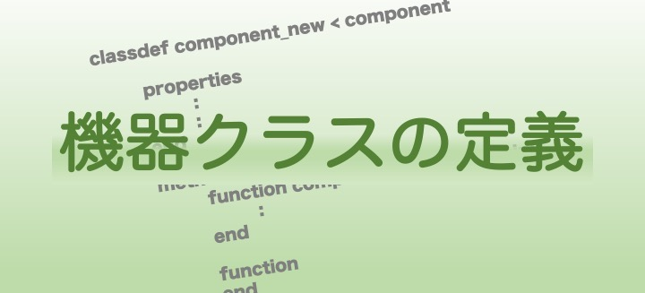

¶
GUILDA上に新しい機器モデルを作るということは、componentクラスを継承した新たな子クラスを定義したmファイルを作成するということになります。本ページでは、このクラスファイルの定義方法を解説していきます。
実装すべきこと¶
- componentクラスの継承
componentクラスには、解析を行う際に機器モデルとして備えておくべき機能を示した関数が定義されています。componentクラスを継承することで、新たに作成する機器モデルにもそれらの関数が自動的に備わります。 - componentクラスの抽象メソッド３つの実装
上ではcomponentクラスを引き継ぐことで機器モデルのクラスとして備えておくべき機能を引き継ぐことが出来ると示しましたが、モデルの動特性を決定する関数などは当然新たなモデルを実装する度に定義する必要があります。そのような継承するだけでは不足している関数を、componentクラスでは抽象メソッドとして定義しています。
解説：抽象メソッドについて¶
componentクラスのメソッドの中に、
matlab
methods(Abstract)
...
end
というように、(Abstract)となっているメソッドがあるはずです。
これは、抽象メソッドと呼ばれるもので、このクラス（ここでは、componentクラス）を継承するクラスは絶対に定義しなくてはいけないメソッドになります。
自分で新たに機器を実装するときに定義が不可欠な性質を抽象メソッドで表しています。
実際にcomponentクラスのインスタンスとしてGUILDA内に既に定義されているgenerator_1axis.m や load_impedance.m などのファイルを見ると、これらの関数が定義されていることが確認できるはずです。
コードの作成方法¶
まず初めに、作成すべきコードの全体像を示します。以下のコードではmyMachineという名前の機器モデルを実装しています。コードを見ると1行目でmyMachine < componentとなっていることが分かると思います。このように表記することで、このクラスはcomponentクラスを継承するということが宣言されます。
また、新たに定義した機器モデルの説明とコンストラクタの実行方法を冒頭にコメントアウトで記しておくことをお薦めします。ここにメモしておくことで、ソースコードの解説ページで紹介していますが、各機器のモデルをリストとして見ることができるようになります。
propertiesには機器モデルの実装にあたり必要なメンバ変数を適宜定義して下さい。なおGUILDA上に実装されている他の機器モデルではパラメータを格納するプロパティ名をparameterとしており、一部のnetworkの情報を取得する関数では「機器クラスのプロパティにparameterがあれば表にまとめる」という処理を実装していることもあります。そのため特に都合が無い限り機器のパラメータを格納するプロパティ名は"parameter"とすることを推奨します。
methodsに定義する関数の要件に関しては、必ず実装しなくてはならない「抽象メソッド」と、「一部の解析を行う際に実装しておく必要がある関数」に分け以下で順に解説を行います。
myMachine.m ```matlab classdef myMachine < component %実装するモデルの説明 %状態変数と入力端の説明 %このクラスのコンストラクタの実行方法・引数の設定方法
properties
%必要なメンバ変数をここに定義します
parameter
x_equilibrium %etc..
end
methods
%コンストラクターメソッド
function obj = myMachine(arg1,arg2,...)
%コードを書く
end
%必ず定義する必要のある関数(抽象メソッド)
function x = set_equilibrium(obj,Veq, Ieq)
%コードを書く
end
function nu = get_nu(obj)
%コードを書く
end
function [dx,constraint] = get_dx_constraint(obj,t,x,V,I,u)
%コードを書く
end
%近似線形化に関する解析を行いたい場合に実装すべき関数
function [A,B,C,D,BV,DV,BI,DI,R,S] = get_linear_matrix(obj,x_st,Vst)
%コードを書く
end
function [dx,con] = get_dx_constraint_linear(obj,t,x,V,I,u)
%コードを書く
end
%状態変数に変数名を付ける場合に実装する関数
function name_tag = get_x_name(obj)
%コードを書く
end
end
end ```
抽象メソッド¶
-
x = set_equilibrium(obj,Veq, Ieq)
潮流計算で決まった母線電圧と母線電流の平衡点Veq,Ieqを受け取って初期化処理を行い平衡状態を導出するためのメソッド- 入力引数
V：潮流計算の結果得られる電圧の平衡点(複素数)I：潮流計算の結果得られる電流の平衡点(複素数)
- 出力因数
x：指定された平衡点に対応する平衡状態
- 入力引数
-
nu = get_nu(obj)
クラス内に定義されている状態uの次数を求めるためのメソッド- 出力引数
nu：入力変数の次数
- 出力引数
-
[dx,constraint] = get_dx_constraint(obj,t, x, V, I, u)
入力を印加した時の状態の微分と電流を取得するためのメソッド- 入力引数
t：時刻x：自分の状態V：母線の電圧([実部;虚部]のベクトル)I：母線の電流([実部;虚部]のベクトル)u：入力信号
- 出力引数
dx：入力が与えられた時のconstraint：実際の母線電流Iと入力されたx、Vからもとまった母線電流との差。０になるはずの制約条件です。
- 入力引数
実装した方が望ましいメソッド¶
以下の関数は定義しなくても機器を実装することはできますが、このままですと一部の機能が使えません。各機器で関数の内容を適宜定義する方が望ましいです。
近似線形化を用いる解析を行うために必要なメソッド¶
-
[A, B, C, D, BV, DV, BI, DI, R, S] = get_linear_matrix(obj,x_st, Vst)
以下の式のように線形化した状態空間表現のシステム行列
A，B，C，D，BV，DV, BI, DI, R, Sを返すメソッド。- 入力引数
x_st：状態変数の平衡点（ベクトル）Vst：潮流計算の結果得られる電圧の平衡点(ベクトル)
- 出力引数
A, B, C, D, BV, DV, BI, DI, R, S：上で示されている状態空間モデルのシステム行列
出力引数のうち、Rは外乱を入れるための行列、Sは評価関数を出力するための行列で、共に制御系を設計するときに必要となるものなので、機器の性質とは異なります。 したがって、単純にシミュレーションを行うだけの時は、零行列にして大丈夫です。
- 入力引数
-
[dx, con] = get_dx_constraint_linear(obj,t, x, V, I, u)
上の「解説(抽象メソッド)」の章で紹介したget_dx_Iの線形化バージョンです。
ただし、実装するためには線形化した状態空間モデルが必要ですので、上のget_linear_matrixのように線形モデルのシステム行列を計算するメソッドが必要になります。
機器の状態変数に変数名をつける場合¶
-
name_tag = get_x_name(obj)
- 入力引数
- なし
- 出力引数
- 各状態名を示す文字列のcell配列
例)name_tag = {'x1','x2','x3'};
- 各状態名を示す文字列のcell配列
この関数は主に、数値シミュレーション編で紹介しますがオプション設定で ```matlab
out = net.simulate(t,varargin,'tools',true); ``` とした際に状態変数名を基に自動で状態を分類しプロットを行う際などに役立ちます。 なお、定義しない場合は状態変数の名前は「state1,state2,・・・」となります。
- 入力引数